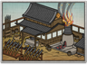
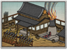

Basic Unit Statistics (can be modified by difficulty level, arts, skills, traits and retainers)
| Recruitment Cost | 750 | |
| Upkeep Cost | 250 | |
| Melee Attack | 4 | 11% |
| Charge Bonus | 6 | 12% |
| Bonus vs Cavalry | 0 | 0% |
| Range | 100 | 15% |
| Accuracy | 60 | 60% |
| Reloading Skill | 30 | 30% |
| Ammunition | 15 | 18% |
| Melee Defence | 2 | 5% |
| Armour | 2 | 13% |
| Morale | 12 | 24% |
Strengths & Weaknesses
- Good range but shorter than bow units.
- Devastating damage.
- High accuracy, reload rate and morale.
- Vulnerable to cavalry and in melee.
Abilities
- Bamboo Wall - A large wall that can be erected during the deployment phase. It blocks the movement of enemies and protects against cavalry charges.
- Increased Range - This temporarily increases a unit's firing range.
Requires
- Buildings:
 
 - Religions:

Description
Warrior monks armed with matchlocks that fire devastating massed volleys into enemy ranks.
A warrior of unshakable faith can be very dangerous: he has no fear of death because his cause is righteous and he serves a higher purpose. Warrior monks are men of such faith, with strong morale, and they are especially dangerous when armed with matchlock guns. The guns are fired in volley and, when combined with the monk's accuracy in aiming, have a devastating effect on any enemy. The matchlock warrior monks must be wary of cavalry attacks, as slow reloading times can leave them vulnerable in melee. During the Sengoku Jidai, warrior monks were a threat to the ruling samurai. Individuals did not have to be ordained to become warrior monks: they simply had to have the right level of fanatical devotion to fight for their beliefs. Oda Nobunaga, in his mission to unify Japan, fought long and hard against the warrior monk sects and, in 1570 at the battle of Ishiyami Honganji, his army was left reeling by their powerful arquebus volleys. Warrior monks became well known for their expertise in firearms, the Negoroji sect in particular. This was due to their early adoption of European weapons and regular competitive training in using them. In fact, some devoted more time to practicing with their guns than to their religious studies!